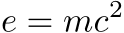

Contents
Summary
The command \formula sets its argument in display math mode.
Settings
| \formula[...,...]{...} | |
| [...,...] | packed tight middle frame depth line halfline -line -halfline inherits from \setupbodyfont |
| {...} | content |
Description
\formula is ConTeXt’s replacement for plain TeX’s $$ ... $$ and accepts additional options.
Examples
Example 1
-
\tfd\formula{e = m c^2}
- 
Notes
See also
- \definebodyfont
- \setupbodyfont
- strc-mat.mkiv
- \m inline math mode